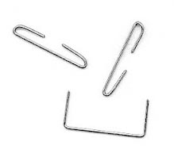

Competitive Stapling

This year's competitive stapling event features athletes from 13 countries and split between two categories.
Fastest Stapling
Athletes will be timed in stapling two reams worth of paper in groups of 14 sheets of paper using a standard-issued stapler. The paper must be hand-counted and stapled using a non-automated stapler by individual. This is not a team-event. There will be age classes in this event, and medals will be awarded by age class:
- Women & Men, Ages 15-30
- Women & Men, Ages 30-45
- Women & Men, Ages 45-60
Weight Stapling
In this event, athletes will compete to see how can staple the thickest packet of paper using a standard-issued stapler. Should the staple not protrude through the back of the last sheet of paper, the athlete will be disqualified. This is certainly a risky event, as there are no second chances. One staple--that's all each athlete gets. For this event, there are weight brackets by gender:In this event, athletes will compete to see how can staple the thickest packet of paper using a standard-issued stapler. Should the staple not protrude through the back of the last sheet of paper, the athlete will be disqualified. This is certainly a risky event, as there are no second chances. One staple--that's all each athlete gets. For this event, there are weight brackets by gender:
- 39 to 42 kg (86 to 92 lb)
- 46 kg (101 lb)
- 50 kg (110 lb)
- 54 kg (119 lb)
- 58 kg (128 lb)
- 63 kg (139 lb)
- 69 kg (152 lb)
- 76 kg (167 lb)
- 85 kg (187 lb)
- 85 to 100 kg (187 to 220 lb)